pacman::p_load(tidyr,plyr, dplyr, lattice, stargazer,readr, sjPlot)Introducción al análisis longitudinal
Correspondiente a la sesión del jueves, 5 de junio de 2025
Introducción análisis longitudinal
Datos
- National Youth Survey (Raudenbusch & Chan, 1992)
- Encuesta anual desde los 11 años en adelante, 5 olas, una al año (i.e. hasta 15 años)
- Medida: instrumento de tolerancia TOL a conductas desviadas, promedio 9 items, likert 1-4 desde “muy mal” hasta “nada mal”. Por ejemplo “fumar marihuana”, “copiar en una prueba” .Mayores puntajes indican mayor tolerancia a desviación.
- Predictores: sexo MALE=1 y autoreporte de exposición a conductas desviadas a los 11 años EXPOSURE. Esta variable se construye estimando la proporción de amigos cercanos que se han visto envueltos en actividades de los mismos 9 items de autoreporte (1=ninguno, 4=todos), los cuales se promedian.
Lectura datos nivel-persona
tolerance <- read.csv("https://github.com/cursos-metodos-facso/multinivel-facso/raw/refs/heads/main/assignment/data/tolerance1.txt")
print(tolerance,row.names=FALSE) id tol11 tol12 tol13 tol14 tol15 male exposure
9 2.23 1.79 1.90 2.12 2.66 0 1.54
45 1.12 1.45 1.45 1.45 1.99 1 1.16
268 1.45 1.34 1.99 1.79 1.34 1 0.90
314 1.22 1.22 1.55 1.12 1.12 0 0.81
442 1.45 1.99 1.45 1.67 1.90 0 1.13
514 1.34 1.67 2.23 2.12 2.44 1 0.90
569 1.79 1.90 1.90 1.99 1.99 0 1.99
624 1.12 1.12 1.22 1.12 1.22 1 0.98
723 1.22 1.34 1.12 1.00 1.12 0 0.81
918 1.00 1.00 1.22 1.99 1.22 0 1.21
949 1.99 1.55 1.12 1.45 1.55 1 0.93
978 1.22 1.34 2.12 3.46 3.32 1 1.59
1105 1.34 1.90 1.99 1.90 2.12 1 1.38
1542 1.22 1.22 1.99 1.79 2.12 0 1.44
1552 1.00 1.12 2.23 1.55 1.55 0 1.04
1653 1.11 1.11 1.34 1.55 2.12 0 1.25stargazer(tolerance, type="text")
=========================================
Statistic N Mean St. Dev. Min Max
-----------------------------------------
id 16 762.812 516.239 9 1,653
tol11 16 1.364 0.353 1.000 2.230
tol12 16 1.441 0.321 1.000 1.990
tol13 16 1.676 0.406 1.120 2.230
tol14 16 1.754 0.575 1.000 3.460
tol15 16 1.861 0.618 1.120 3.320
male 16 0.438 0.512 0 1
exposure 16 1.191 0.329 0.810 1.990
-----------------------------------------Transformación datos período-persona función pivot_longer() de la librería tidyr
attach(tolerance)
# Pasar a long
tolerance.pp <- pivot_longer(
data = tolerance,
cols = tol11:tol15,
names_to = "variable",
values_to = "value",
names_transform = list(variable = as.factor)
)# Algunas comparaciones entre wide y long
names(tolerance)[1] "id" "tol11" "tol12" "tol13" "tol14" "tol15" "male"
[8] "exposure"head(tolerance) id tol11 tol12 tol13 tol14 tol15 male exposure
1 9 2.23 1.79 1.90 2.12 2.66 0 1.54
2 45 1.12 1.45 1.45 1.45 1.99 1 1.16
3 268 1.45 1.34 1.99 1.79 1.34 1 0.90
4 314 1.22 1.22 1.55 1.12 1.12 0 0.81
5 442 1.45 1.99 1.45 1.67 1.90 0 1.13
6 514 1.34 1.67 2.23 2.12 2.44 1 0.90dim(tolerance)[1] 16 8names(tolerance.pp)[1] "id" "male" "exposure" "variable" "value" head(tolerance.pp)# A tibble: 6 × 5
id male exposure variable value
<int> <int> <dbl> <fct> <dbl>
1 9 0 1.54 tol11 2.23
2 9 0 1.54 tol12 1.79
3 9 0 1.54 tol13 1.9
4 9 0 1.54 tol14 2.12
5 9 0 1.54 tol15 2.66
6 45 1 1.16 tol11 1.12dim(tolerance.pp)[1] 80 5tolerance.pp %>% slice(1:32) # muestra dos primeras medidas de tolerancia (16 casos primera, 16 segunda), ordenado por mediciones en lugar de casos# A tibble: 32 × 5
id male exposure variable value
<int> <int> <dbl> <fct> <dbl>
1 9 0 1.54 tol11 2.23
2 9 0 1.54 tol12 1.79
3 9 0 1.54 tol13 1.9
4 9 0 1.54 tol14 2.12
5 9 0 1.54 tol15 2.66
6 45 1 1.16 tol11 1.12
7 45 1 1.16 tol12 1.45
8 45 1 1.16 tol13 1.45
9 45 1 1.16 tol14 1.45
10 45 1 1.16 tol15 1.99
# ℹ 22 more rows# Sort by id
tolerance.pp = arrange(tolerance.pp, id)
tolerance.pp %>% slice(1:15) # muestra tres primeras ID con sus correspondientes 5 mediciones# A tibble: 15 × 5
id male exposure variable value
<int> <int> <dbl> <fct> <dbl>
1 9 0 1.54 tol11 2.23
2 9 0 1.54 tol12 1.79
3 9 0 1.54 tol13 1.9
4 9 0 1.54 tol14 2.12
5 9 0 1.54 tol15 2.66
6 45 1 1.16 tol11 1.12
7 45 1 1.16 tol12 1.45
8 45 1 1.16 tol13 1.45
9 45 1 1.16 tol14 1.45
10 45 1 1.16 tol15 1.99
11 268 1 0.9 tol11 1.45
12 268 1 0.9 tol12 1.34
13 268 1 0.9 tol13 1.99
14 268 1 0.9 tol14 1.79
15 268 1 0.9 tol15 1.34# adecuar a cap. 2 Singer & Willet
tolerance.pp$age=as.numeric(tolerance.pp$variable)+10 # para identificar edad
tolerance.pp = dplyr::rename(tolerance.pp,tolerance=value)
names(tolerance.pp)[1] "id" "male" "exposure" "variable" "tolerance" "age" attach(tolerance.pp)Plot trayectorias
xyplot(tolerance ~ age | id, data=tolerance.pp, as.table=T)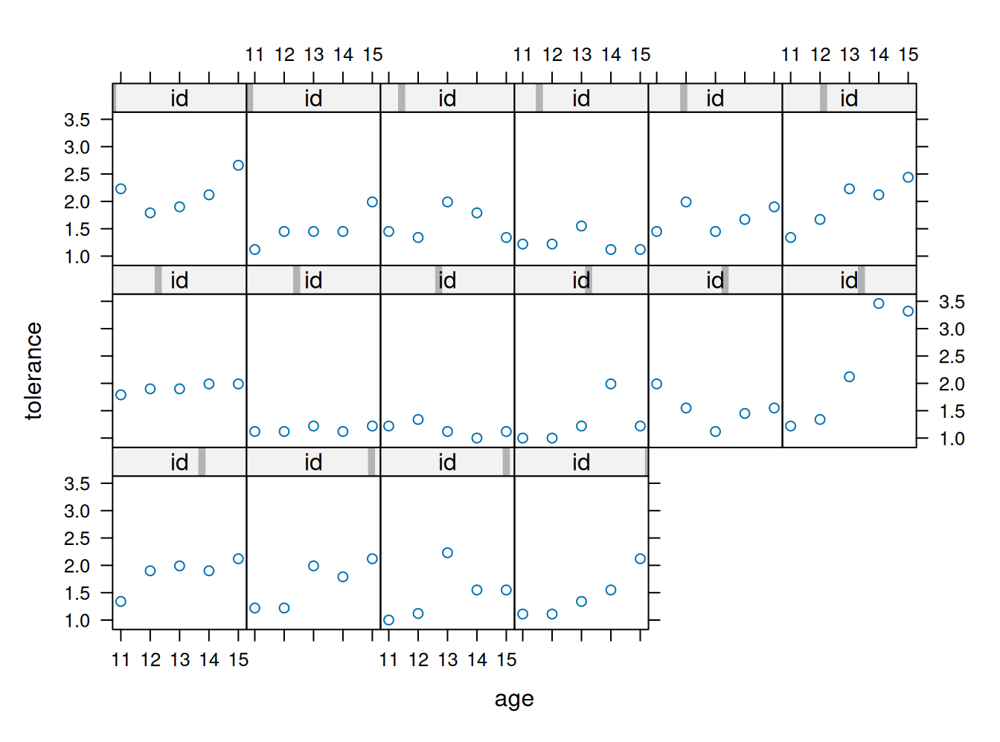
Matriz de correlaciones
options(digits=2)
cortol=cor(tolerance[ , 2:6])stargazer(cortol, type = "html")| tol11 | tol12 | tol13 | tol14 | tol15 | |
| tol11 | 1 | 0.660 | 0.062 | 0.140 | 0.260 |
| tol12 | 0.660 | 1 | 0.250 | 0.210 | 0.390 |
| tol13 | 0.062 | 0.250 | 1 | 0.590 | 0.570 |
| tol14 | 0.140 | 0.210 | 0.590 | 1 | 0.820 |
| tol15 | 0.260 | 0.390 | 0.570 | 0.820 | 1 |
Plot trayectorias no paramétricas
xyplot(tolerance~age | id, data=tolerance.pp,
prepanel = function(x, y) prepanel.loess(x, y, family="gaussian"),
xlab = "Age", ylab = "Tolerance",
panel = function(x, y) {
panel.xyplot(x, y)
panel.loess(x,y, family="gaussian") },
ylim=c(0, 4), as.table=T)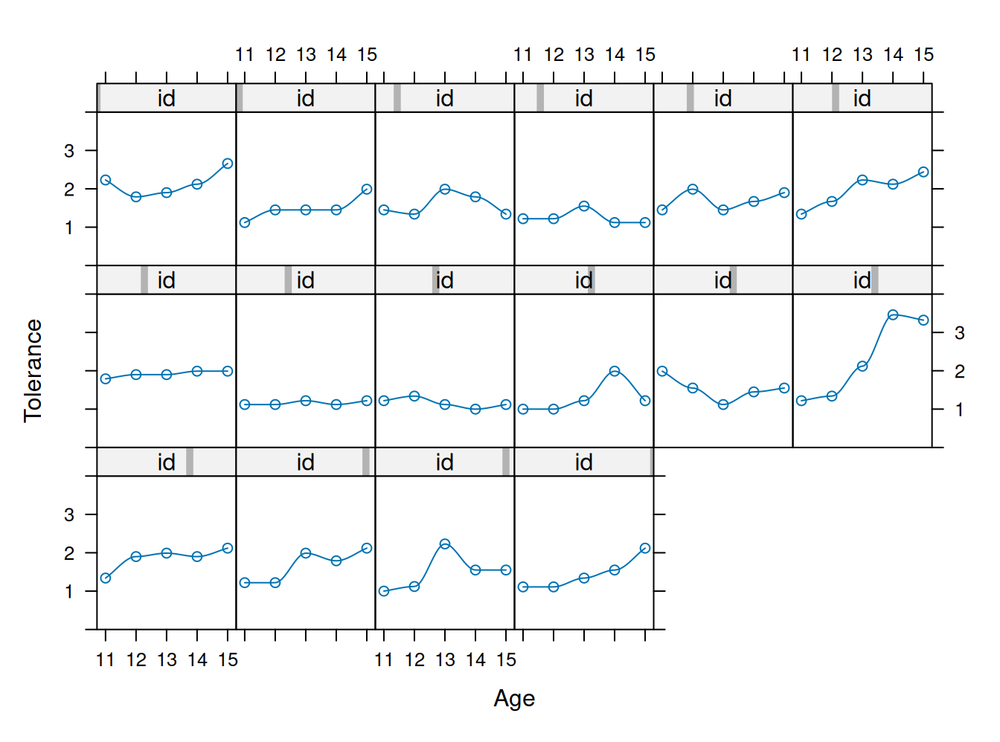
Aproximación de modelos individuales (regresiones)
tolerance.pp$agec=tolerance.pp$age-11 # centrar
# Generar regresiones individuales
by(tolerance.pp, id, function(x) summary(lm(tolerance ~ agec, data=x)))Análisis de interceptos, pendientes y \(R^{2}\)
Interceptos
int <- by(tolerance.pp, id, function(data)
coefficients(lm(tolerance ~ agec, data = data))[[1]])
int <- unlist(int)
names(int) <- NULL
int
summary(int)
stem(int, scale=3)Pendientes/tasa de cambio
rate <- by(tolerance.pp, id, function(data)
coefficients(lm(tolerance ~ age, data = data))[[2]])
rate <- unlist(rate)
names(rate) <- NULL
summary(rate)
stem(rate, scale=2)\(R^{2}\)
rsq <- by(tolerance.pp, id, function(data)
summary(lm(tolerance ~ agec, data = data))$r.squared)
rsq <- unlist(rsq)
names(rsq) <- NULL
summary(rsq) Min. 1st Qu. Median Mean 3rd Qu. Max.
0.0154 0.2505 0.3917 0.4910 0.7971 0.8864 stem(rsq, scale=2)
The decimal point is 1 digit(s) to the left of the |
0 | 27
1 | 3
2 | 55
3 | 113
4 | 5
5 |
6 | 8
7 | 78
8 | 6889Plot de trayectorias individuales
xyplot(tolerance ~ age | id, data=tolerance.pp,
panel = function(x, y){
panel.xyplot(x, y)
panel.lmline(x, y)
}, ylim=c(0, 4), as.table=T)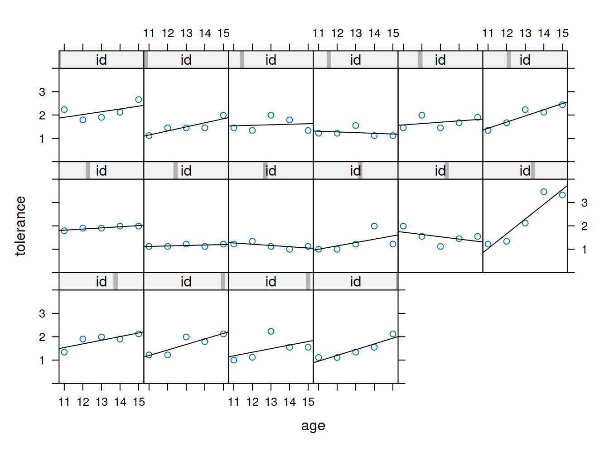
Plot de trayectorias brutas conjuntas
interaction.plot(tolerance.pp$age, tolerance.pp$id, tolerance.pp$tolerance)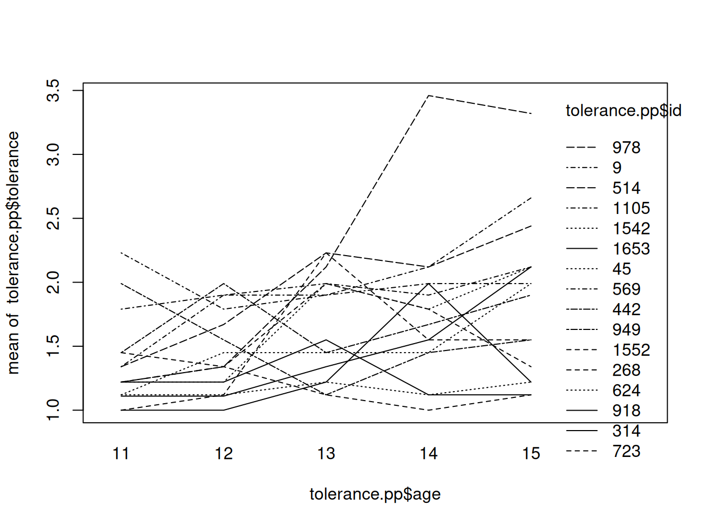
Plot de trayectorias lineales conjuntas
# fitting the linear model by id
fit <- by(tolerance.pp, id, function(bydata) fitted.values(lm(tolerance ~ age, data=bydata)))
fit <- unlist(fit)
# plotting the linear fit by id
interaction.plot(tolerance.pp$age, tolerance.pp$id, fit, xlab="age", ylab="tolerance")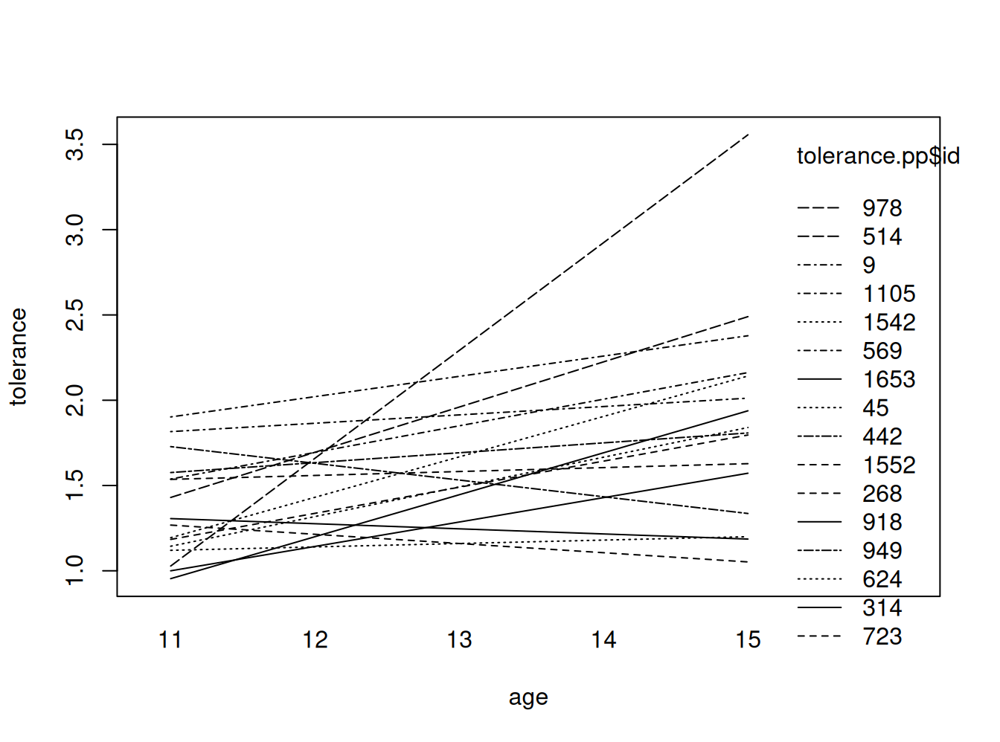
Análisis del efecto de variables de nivel 2 (sexo)
Hombres
# fitting the linear model by id, males only
tolm <- tolerance.pp[male==1 , ]
fitmlist <- by(tolm, tolm$id, function(bydata) fitted.values(lm(tolerance ~ age, data=bydata)))
fitm <- unlist(fitmlist)
#appending the average for the whole group
lm.m <- fitted( lm(tolerance ~ age, data=tolm) )
names(lm.m) <- NULL
fit.m2 <- c(fitm, lm.m[1:5])
age.m <- c(tolm$age, seq(11,15))
id.m <- c(tolm$id, rep(111, 5))
#plotting the linear fit by id, males
#id.m=111 denotes the average value for males
interaction.plot(age.m, id.m, fit.m2, ylim=c(0, 4), xlab="AGE", ylab="TOLERANCE", lwd=1, main="Males")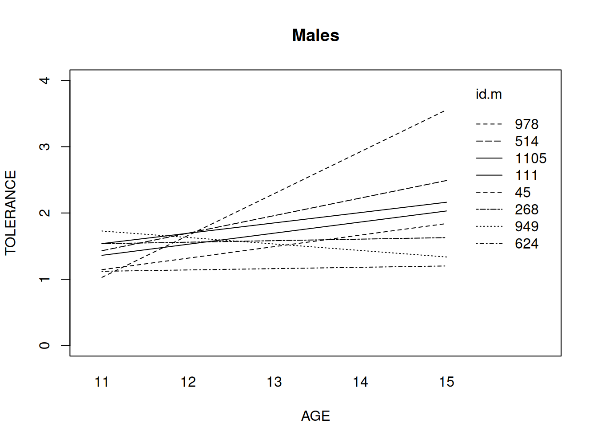
Mujeres
#fitting the linear model by id, females only
tol.pp.fm <- tolerance.pp[tolerance.pp$male==0 , ]
fit.fm <- by(tol.pp.fm, tol.pp.fm$id,
function(data) fitted.values(lm(tolerance ~ age, data=data)))
fit.fm1 <- unlist(fit.fm)
names(fit.fm1) <- NULL
#appending the average for the whole group
lm.fm <- fitted( lm(tolerance ~ age, data=tol.pp.fm) )
names(lm.fm) <- NULL
fit.fm2 <- c(fit.fm1, lm.fm[1:5])
age.fm <- c(tol.pp.fm$age, seq(11,15))
id.fm <- c(tol.pp.fm$id, rep(1111, 5))
#plotting the linear fit by id, females
#id.fm=1111 denotes the average for females
interaction.plot(age.fm, id.fm, fit.fm2, ylim=c(0, 4), xlab="AGE", ylab="TOLERANCE", lwd=1,main="Females" )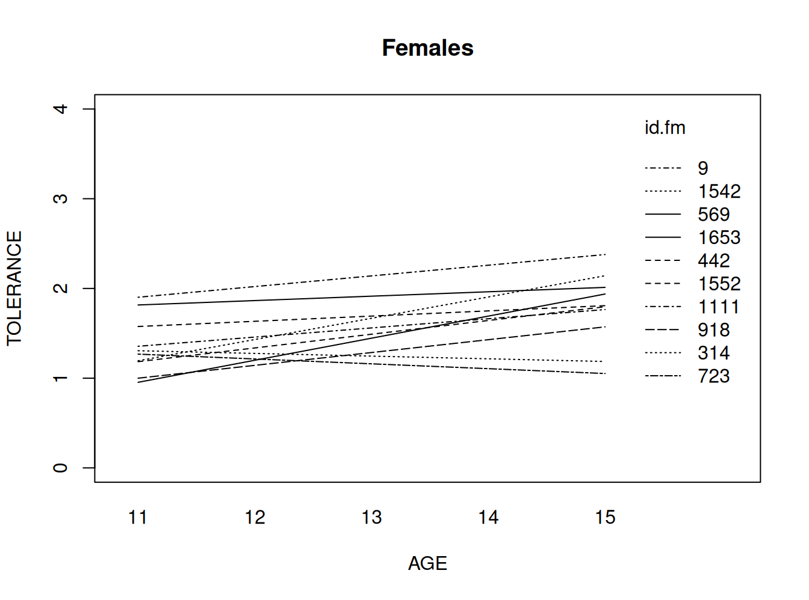
Análisis longitudinal II: Estimación
Sesión basada principalmente en Singer & Willett ALDA (Applied Longitudinal Data Analysis), capítulos 2 & 3
Cargar paquetes
pacman::p_load(
haven,
lme4,
dplyr,
lattice,
texreg
)Ejemplo Singer & Willett cap. 3
- Datos: estudio sobre efecto de intervencíon temprana en habilidades cognitivas
- 3 mediciones a 103 niños de familias de bajos ingresos
- A los 6 meses, la mitad (58) fue asignado a una intervención de estimulación cognitiva
- Mediciones a los 12, 18 y 24 meses
- Variable dependiente: puntaje en habilidades cognitivas (cog)
Lectura de datos
early.int<-read_stata("https://github.com/cursos-metodos-facso/multinivel-facso/raw/refs/heads/main/assignment/data/earlyint_pp.dta")
summary(early.int) id cog age program time
Min. : 68 Min. : 57 Min. :1.0 Min. :0.000 Min. :0.0
1st Qu.:102 1st Qu.: 92 1st Qu.:1.0 1st Qu.:0.000 1st Qu.:0.0
Median :144 Median :103 Median :1.5 Median :1.000 Median :0.5
Mean :474 Mean :103 Mean :1.5 Mean :0.563 Mean :0.5
3rd Qu.:940 3rd Qu.:113 3rd Qu.:2.0 3rd Qu.:1.000 3rd Qu.:1.0
Max. :985 Max. :137 Max. :2.0 Max. :1.000 Max. :1.0 Exploración con casos seleccionados
early.int$id [1] 68 68 68 70 70 70 71 71 71 72 72 72 75 75 75 76 76 76
[19] 77 77 77 79 79 79 80 80 80 81 81 81 83 83 83 84 84 84
[37] 86 86 86 87 87 87 89 89 89 90 90 90 91 91 91 92 92 92
[55] 93 93 93 96 96 96 97 97 97 98 98 98 99 99 99 100 100 100
[73] 101 101 101 102 102 102 105 105 105 106 106 106 107 107 107 109 109 109
[91] 110 110 110 111 111 111 112 112 112 113 113 113 114 114 114 115 115 115
[109] 116 116 116 117 117 117 120 120 120 121 121 121 122 122 122 125 125 125
[127] 126 126 126 127 127 127 128 128 128 129 129 129 134 134 134 135 135 135
[145] 136 136 136 137 137 137 143 143 143 144 144 144 145 145 145 146 146 146
[163] 148 148 148 149 149 149 151 151 151 152 152 152 902 902 902 904 904 904
[181] 906 906 906 908 908 908 909 909 909 911 911 911 913 913 913 916 916 916
[199] 917 917 917 919 919 919 924 924 924 925 925 925 926 926 926 929 929 929
[217] 931 931 931 934 934 934 935 935 935 936 936 936 938 938 938 940 940 940
[235] 941 941 941 942 942 942 944 944 944 947 947 947 949 949 949 950 950 950
[253] 953 953 953 960 960 960 964 964 964 966 966 966 967 967 967 968 968 968
[271] 969 969 969 970 970 970 971 971 971 972 972 972 973 973 973 975 975 975
[289] 976 976 976 977 977 977 979 979 979 980 980 980 982 982 982 984 984 984
[307] 985 985 985
attr(,"format.stata")
[1] "%9.0g"early.int %>% group_by(id) %>% summarise(mean(program))# A tibble: 103 × 2
id `mean(program)`
<dbl> <dbl>
1 68 1
2 70 1
3 71 1
4 72 1
5 75 1
6 76 1
7 77 1
8 79 1
9 80 1
10 81 1
# ℹ 93 more rowsearly.int1 <- early.int %>% filter(id >= 68 & id <=75 | id >= 902 & id <=906)
early.int1# A tibble: 24 × 5
id cog age program time
<dbl> <dbl> <dbl> <dbl> <dbl>
1 68 103 1 1 0
2 68 119 1.5 1 0.5
3 68 96 2 1 1
4 70 106 1 1 0
5 70 107 1.5 1 0.5
6 70 96 2 1 1
7 71 112 1 1 0
8 71 86 1.5 1 0.5
9 71 73 2 1 1
10 72 100 1 1 0
# ℹ 14 more rowsxyplot(cog~age | id, data=early.int1,
panel = function(x, y){
panel.xyplot(x, y)
panel.lmline(x, y)
}, ylim=c(50, 150), as.table=T)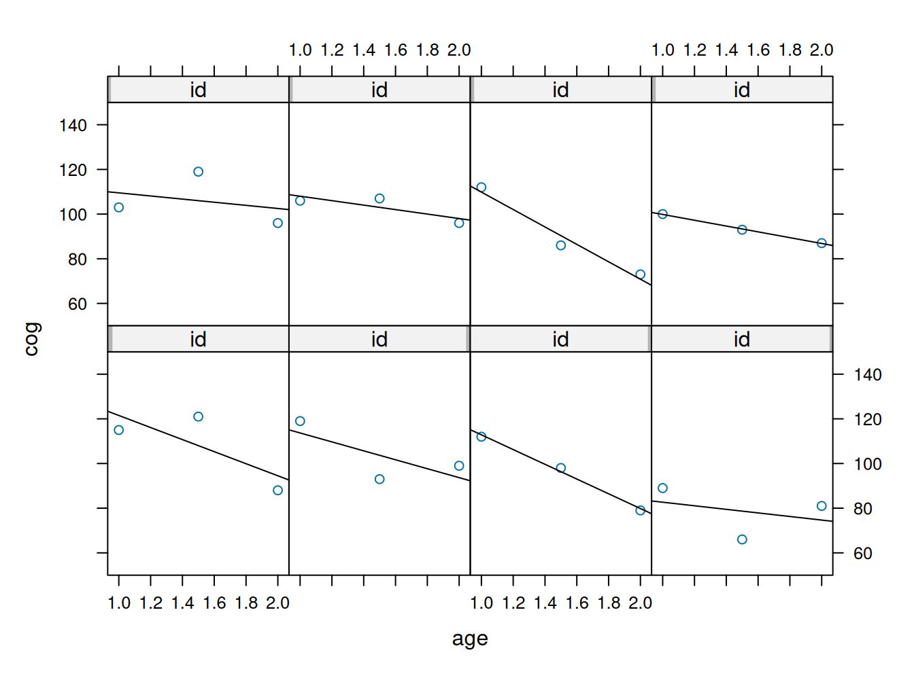
Estimación de modelo lineal por id y plot
fit <- by(early.int, early.int$id, function(data) fitted.values(lm(cog ~ age, data=data)))
fit1 <- unlist(fit)
names(fit1) <- NULL
#plotting the linear fit by id
xyplot(cog ~ age, groups=id, data=early.int, type="r", ylim=c(50,150))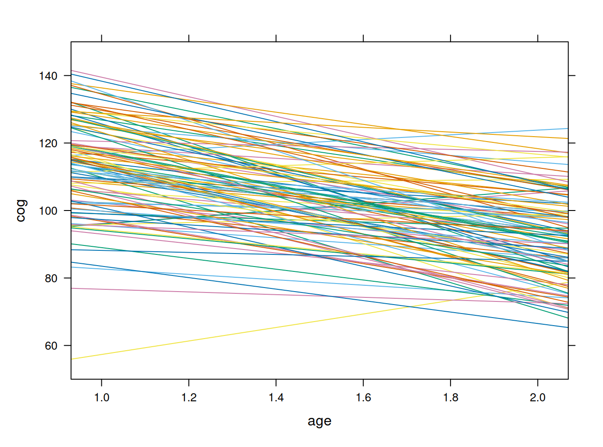
Plot según participación en programa de estimulación de habilidades cognitivas
#plotting the linear fit by idm program = 0
early.int0=subset(early.int, program<1)
xyplot(cog ~ age, groups=id, data=early.int0, type="r", ylim=c(50,150), main = "Program=0")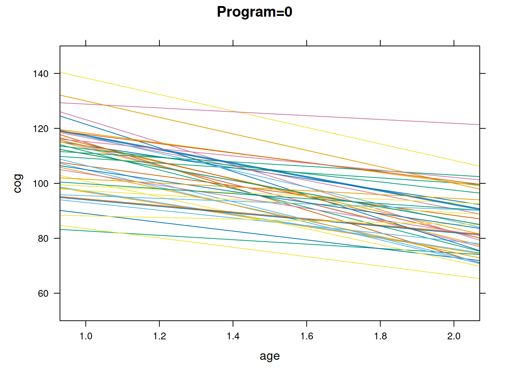
#plotting the linear fit by idm program = 1
early.int01=subset(early.int, program>0)
xyplot(cog ~ age, groups=id, data=early.int01, type="r", ylim=c(50,150), main = "Program=1")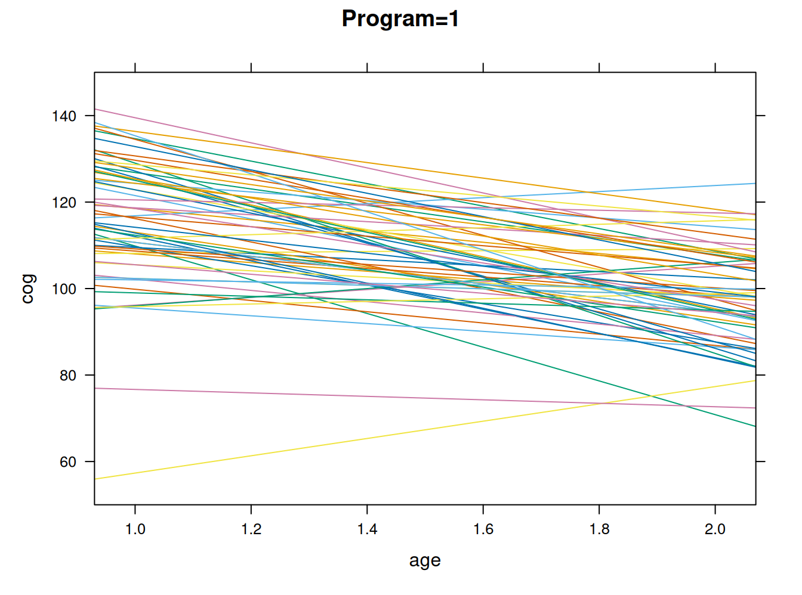
Estimación multinivel
results0 <- lmer(cog ~ 1 + (1|id), data=early.int, REML=FALSE)
reghelper::ICC(results0)[1] 0.34Modelos con variable nivel 2, variable nivel 1 e interacción
results1 <- lmer(cog ~ 1 + program + (1|id), data=early.int, REML=FALSE)
summary(results1)
results2 <- lmer(cog ~ 1 + program + time+ (1|id), data=early.int, REML=FALSE)
summary(results2)
results3 <- lmer(cog ~ time*program + (time|id), data=early.int, REML=FALSE)
summary(results3)htmlreg(list(results0, results1,results2, results3))| Model 1 | Model 2 | Model 3 | Model 4 | |
|---|---|---|---|---|
| (Intercept) | 102.62*** | 97.27*** | 106.36*** | 107.84*** |
| (1.16) | (1.61) | (1.72) | (2.03) | |
| program | 9.49*** | 9.49*** | 6.85* | |
| (2.14) | (2.14) | (2.71) | ||
| time | -18.17*** | -21.13*** | ||
| (1.24) | (1.88) | |||
| time:program | 5.27* | |||
| (2.51) | ||||
| AIC | 2551.12 | 2535.12 | 2389.84 | 2385.94 |
| BIC | 2562.32 | 2550.05 | 2408.50 | 2415.81 |
| Log Likelihood | -1272.56 | -1263.56 | -1189.92 | -1184.97 |
| Num. obs. | 309 | 309 | 309 | 309 |
| Num. groups: id | 103 | 103 | 103 | 103 |
| Var: id (Intercept) | 84.35 | 62.19 | 89.69 | 123.97 |
| Var: Residual | 161.50 | 161.50 | 79.01 | 74.76 |
| Var: id time | 10.10 | |||
| Cov: id (Intercept) time | -35.38 | |||
| ***p < 0.001; **p < 0.01; *p < 0.05 | ||||
Gráfico de interacción
a<-fitted.values (results3)
interaction.plot(early.int$age, early.int$program, a, xlab="AGE", ylab="COG",
ylim=c(50, 150), lwd=4, lty=1, col=4:5)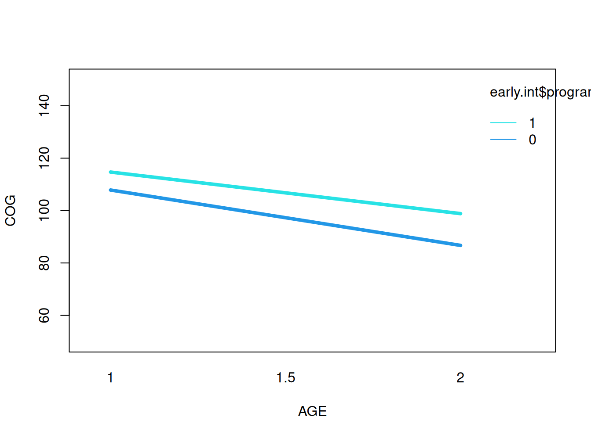